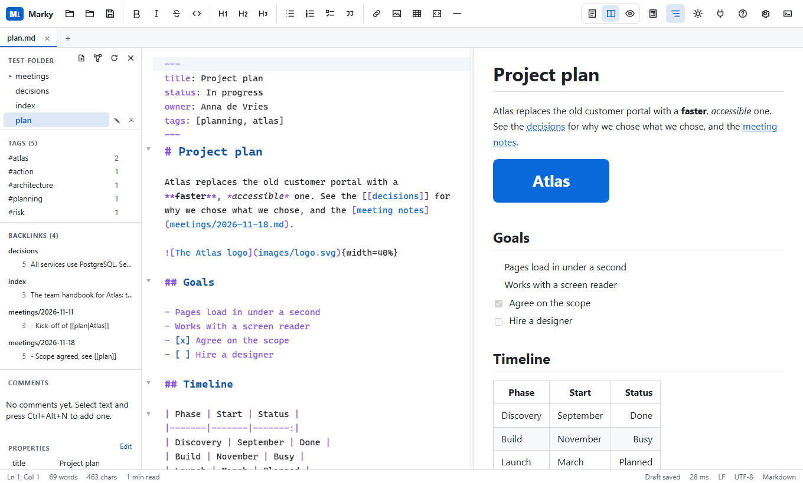

Marky Manual
Marky is a Markdown editor with a live preview, for notes, documentation, reports and everything in between. It runs in your browser (the web app) and as a program for Windows, macOS and Linux (the desktop app). Both look and work the same; where they differ, this manual says Desktop or Web.

This manual walks through everything Marky does, with a picture of each part. Read it front to back to learn Marky, or jump to the chapter you need. The navigation on the left lists the chapters; the search box at the top searches all of them.
The chapters
| Chapter | What's in it | |
|---|---|---|
| 1 | Getting started | Installing Marky on your computer, using it in a browser or on a phone, and a first note |
| 2 | The Marky window | The toolbar, tabs, editor, preview, sidebar and status bar, and the command palette |
| 3 | Writing | Markdown, formatting shortcuts, the / menu, templates, properties, checks and the writing assistant |
| 4 | Editing views and focus | Source, live preview and seamless view; layouts; focus and typewriter mode |
| 5 | Files and folders | Tabs, folders, search, renaming, Git, sync copies and importing Word documents |
| 6 | Tables | Writing tables, the table bar and the visual table editor |
| 7 | Pictures, video and diagrams | Images, click-to-load videos, Mermaid, Graphviz, charts, drawings, C4 and PlantUML |
| 8 | Linked notes, tags and the graph | Wikilinks, backlinks, tags and the graph of your notes |
| 9 | Citations | Citing from a BibTeX or CSL-JSON bibliography |
| 10 | Reviewing: suggestions and comments | Track changes, comments, @mentions and Word round trips |
| 11 | Editing together, live | Sharing a note, the three kinds of link, who wrote what |
| 12 | Your work is safe | Drafts, recovery, version history and encrypted notes |
| 13 | Export, publish and present | HTML, PDF, Word, PowerPoint, slides, websites and Confluence |
| 14 | AI agents | Claude Code, Codex and Gemini with your notes (desktop) |
| 15 | Settings and plugins | Every setting, the built-in plugins and the plugin market |
| 16 | Keyboard shortcuts | All shortcuts on one page |
| 17 | Troubleshooting | What to do when something doesn't work |
On a Mac, read Ctrl as ⌘ throughout.